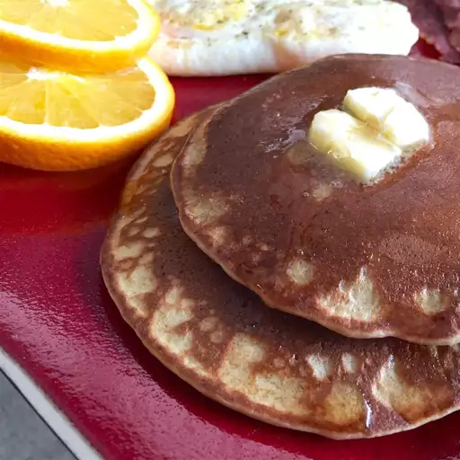

Quinoa Pancakes

Home
Description
Gluten-free pancakes with butter and honey
Ingredients
- 1 ½ cups quinoa flour
- 1 ½ teaspoons baking powder
- ½ teaspoon salt
- 1 ¼ cups flaxseed milk
- 3 eggs, beaten
- 2 tablespoons butter, melted
- 2 tablespoons honey
Steps
- Grease a griddle or large skillet and preheat over medium heat.
- Stir quinoa flour, baking powder, and salt together in a bowl.
- Stir flaxseed milk, eggs, melted butter, and honey into the flour mixture until you have a thin batter.
- Pour 1/4 cup batter onto your hot cooking surface per pancake and cook until bubbles form on top, 2 to 3 minutes.
- Flip the pancake and cook until browned on the bottom, about 2 minutes more.